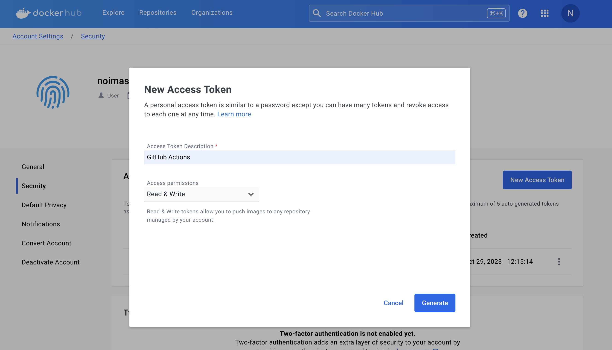
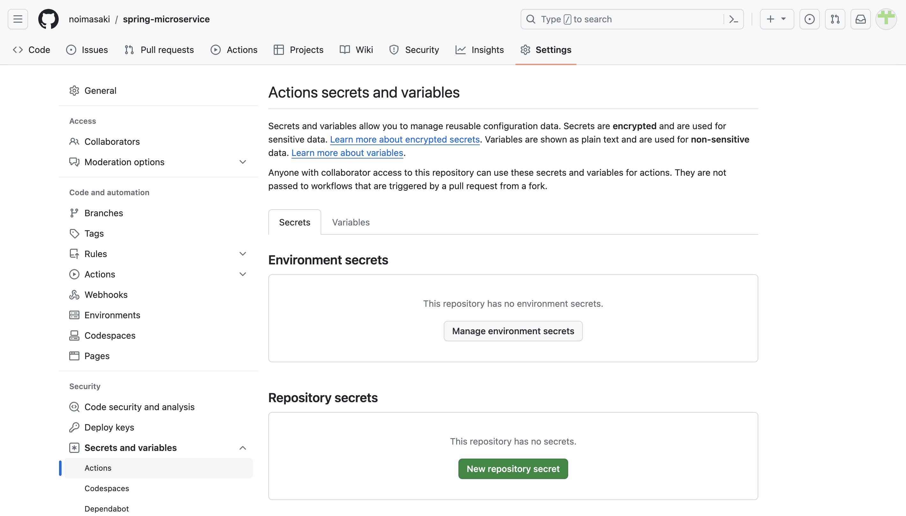
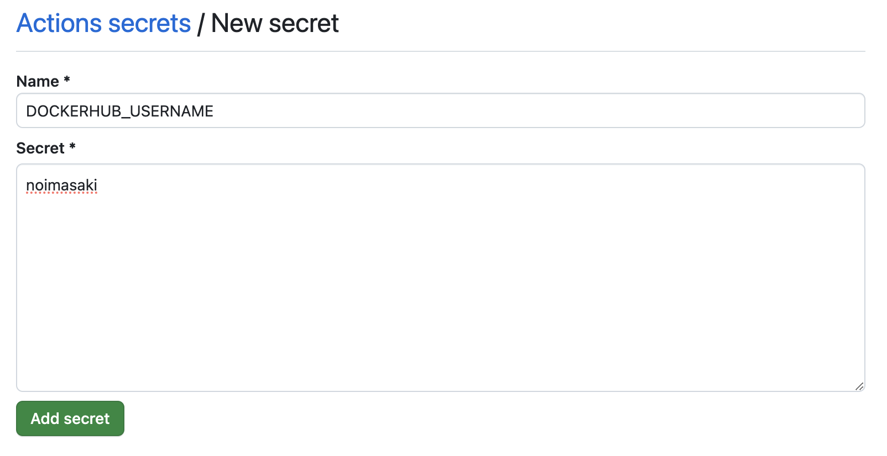

GitHubActionsを利用した自動ビルド
GitHubActionsを利用してSpringBootプロジェクトのビルド→コンテナビルド→DockerHubへPushを自動化する
必要なもの
GitHubアカウント
DockerHubアカウント
1. DockerHubアクセストークンの発行
ビルドしたコンテナをDocker Hubへpushするときに、必要なアクセストークンキーをDocker Hubで発行する。
Account / Securityから、[New Access Token]を選択
任意の名前と、[Access permissions]を選択して、[Generate]

トークンが表示されるので、手元に控えておく

2. GitHubへトークン情報の登録
自動化したいリポジトリで[Settings > Secrets and variables > Actions]から[New repository secret]を選択

DOCKERHUB_TOKENをNameに設定して、DockerHubで取得したアクセストークンをValueに設定して、[Add secret]する

同様にして、DOCKERHUB_USERNAMEとしてDocker Hubのユーザ名を作成する。

3. GitHub Actionsの設定
実現したい要件は以下
Springプロジェクトのビルド（Jar）
コンテナビルド & DockerHubへpush
まずはリポジトリに、GitHub Actions設定用のYAMLファイルを作成して、ここに記載をしていく。
.github/workflows/docker-build.yaml
Java（Maven）のビルドはGitHubActions作成時に提案される[Java with Maven]を参考にする。
Dockerイメージのビルド・DockerHubへのpushは公式ドキュメントを参考にする。
今回の要件を満たすワークフローは以下
# 名前
name: "Docker image build and push to DockerHub"
# onセクション
# ：このワークフローがいつ実行されるかを定義
on:
push:
branches:
- 'main' # mainブランチにpushされたときに実行
# jobsセクション
# ：ワークフローの中で行う作業をjobIDとして定義する。各jobIDは並列に処理される。
jobs:
# jobID
docker:
runs-on: ubuntu-latest # 実行環境（ランナー）を指定
steps:
-
# リポジトリのコードをランナーへチェックアウト
name: Checkout
uses: actions/checkout@v3
-
name: Set up JDK
uses: actions/setup-java@v3
with: # Java環境のオプション指定（作成したSpringプロジェクトに合わせる）
java-version: '17'
distribution: 'temurin'
cache: maven
-
name: Build backend-item
run: |
cd backend-item
mvn -B package spring-boot:repackage -DskipTests
-
name: Build frontend-webapp
run: |
cd frontend-webapp
mvn -B package spring-boot:repackage -DskipTests
-
# マルチプラットフォームのビルドをサポートするためQEMUをセットアップ（任意）
name: Set up QEMU
uses: docker/setup-qemu-action@v3
-
# マルチプラットフォームのビルドをサポートするためQEMUをセットアップ（任意）
name: Set up Docker Buildx
uses: docker/setup-buildx-action@v3
-
name: Login to Docker Hub
uses: docker/login-action@v3
with:
username: ${{ secrets.DOCKERHUB_USERNAME }}
password: ${{ secrets.DOCKERHUB_TOKEN }}
-
name: Build and push（backend-item）
uses: docker/build-push-action@v5
with:
context: ./backend-item
push: true # Dockerイメージのビルド後に自動的にDocker Hubにプッシュするかどうか
tags: ${{ secrets.DOCKERHUB_USERNAME }}/backend-item:latest
-
name: Build and push（frontend-webapp）
uses: docker/build-push-action@v5
with:
context: ./frontend-webapp
push: true # Dockerイメージのビルド後に自動的にDocker Hubにプッシュするかどうか
tags: ${{ secrets.DOCKERHUB_USERNAME }}/frontend-webapp:latest
開発環境でcommitすると、DockerHubへDockerイメージが自動でpushされる。